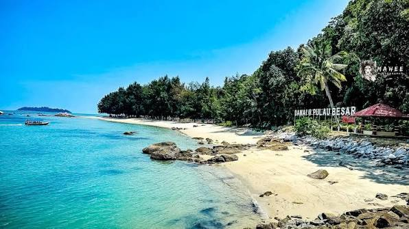

Besar Island, Melaka

Besar Island is an island approximately 13 km off the coast of mainland Malacca in Malaysia. It is served by 15-minute private motorboat rides from the towns of Pernu and Umbai and 30-minute scheduled ferry rides from Anjung Batu Jetty in Umbai. Besar Island along with 6 nearby islets form the Water Islands Group. There are a few attractions which spread across the island, including the tombs of Baghdad-born Islamic preacher Sultan Al Ariffin Syeikh Ismail and his relatives, who were part of an entourage responsible for the spread of Islam throughout the Malay Archipelago after arriving at the island in 1495. The Besar Island Museum operated by the state's Museum Corporation displays various information related to the island's sights and legend. There is one religious school located on the northeastern tip of the island, adjacent to the jetty. Putera Island Resort on the east side of the island and Marina Resort on the West.